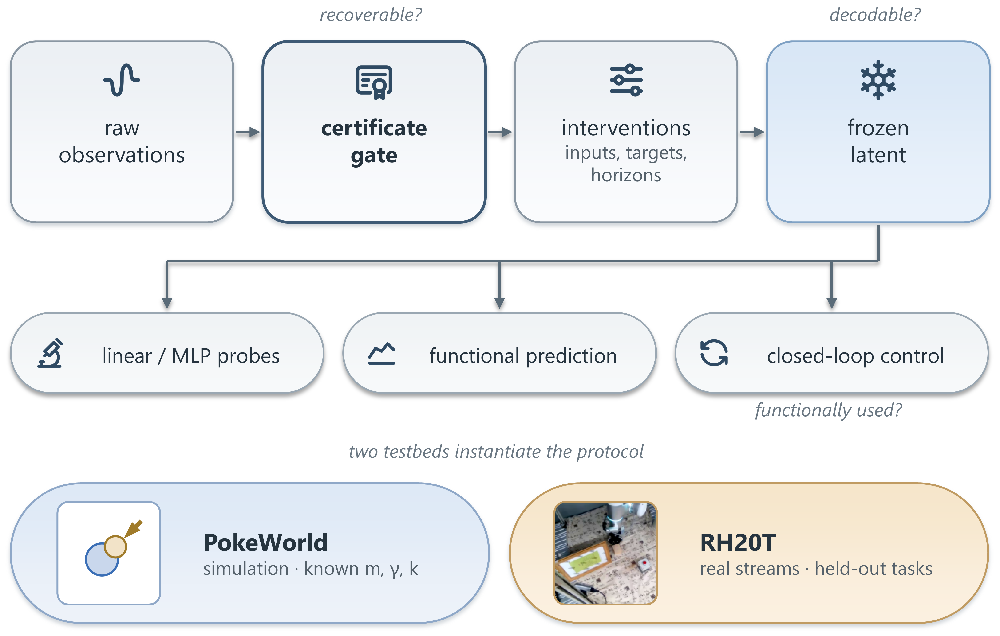
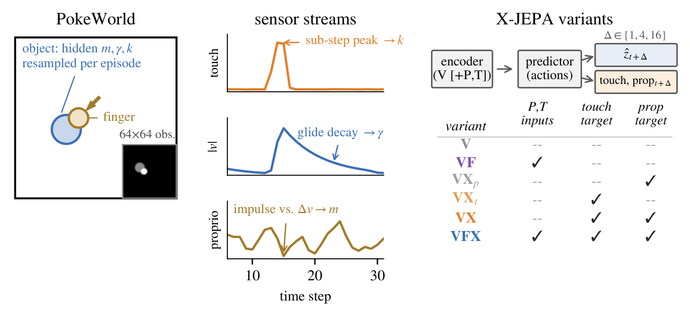
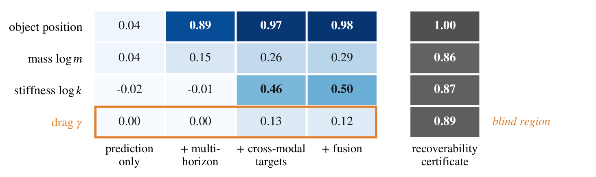
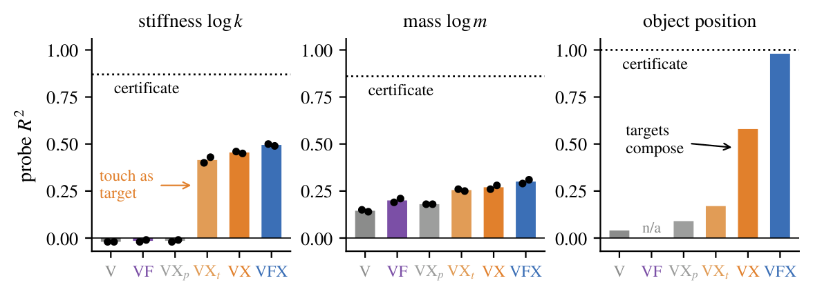
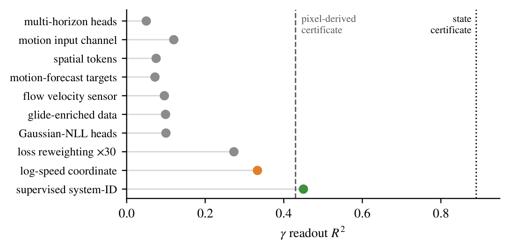
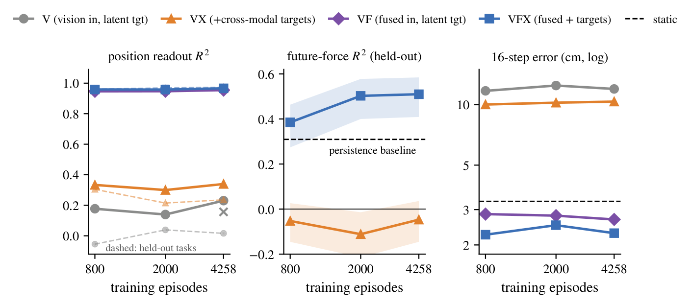

What Can Latent World Models Know?
Physical Parameter Identifiability in Multimodal Predictive Representations
1New York University · 2Carnegie Mellon University · 3Columbia University
TL;DR: A latent world model carries the physical parameters its prediction targets require of it — a modality that is fused into the input but never forecast contributes nothing, and more data changes this in no arm that lacks either the information or the prediction pressure.
Abstract
A central premise of latent world models is that predicting the future forces a representation to internalize the physics of its environment. Which physical quantities does a trained latent actually contain, and what decides this? We answer with controlled interventions in PokeWorld, an interactive environment whose visually identical objects hide mass, drag, and contact stiffness. A certificate-gated protocol first certifies each parameter as recoverable from raw observations, then measures whether it enters the latent, so a null result can be attributed to the objective rather than to the environment. The resulting identifiability map has two organizing mechanisms and one frontier. Inputs limit what can be known, while prediction targets decide what is retained. Stiffness enters the latent only when touch is forecast (R2 0.50, against −0.02 when the same signal is merely fused into the input), and under single-step prediction a vision-only latent discards even perfectly visible object state. Drag marks the frontier. It carries a recoverability certificate of 0.89 yet plateaus near 0.13 under every deterministic prediction objective we test, while a supervised head on the same trunk reaches 0.45. On RH20T, an input×target factorial over scaling curves reproduces both mechanisms across two robots and 4,258 episodes.
Overview

Latent world models are usually justified by a single claim: predicting the future forces a representation to internalize physics. The claim is rarely tested, because a negative result is ambiguous. If a probe cannot read mass out of a latent, is mass absent from the representation, absent from the observations, or merely beyond the probe?
We remove that ambiguity with a certificate gate. Before any model is evaluated, each parameter must be certified recoverable from raw observations — the best R2 any estimator we construct achieves on raw observation windows. Only certified parameters are asked of a model, so a null result belongs to the objective rather than to the environment or the instrument. Three questions follow in order: is it recoverable, is it decodable from the latent, and is it functionally used by the model's own predictions and control.
PokeWorld: the same pixels, different physics
A force-controlled finger pokes an object whose mass, drag, and contact stiffness are resampled every episode and rendered identically. Nothing about appearance reveals them. The pairs below start from the same frame and are driven by the same actions; only one hidden parameter differs. The inset in each clip is the actual 64×64 observation the model consumes.
The three parameters deliberately span an observability spectrum: drag is chiefly visual, mass cross-modal, and stiffness almost purely tactile. Which representation acquires which parameter is therefore diagnostic of the learning dynamics rather than of the environment.

The identifiability map

Targets, not inputs, decide content. Contact stiffness enters the latent only when touch is a prediction target (R2 0.40–0.57 across seeds, regularization strengths, architectures, and probe families). It does not enter when the full tactile stream is merely fused into the encoder (−0.02), nor when an equally sized proprioception target substitutes for it (−0.01). What matters is not extra work, but that the extra work's answer depends on the parameter.

Vision-only models sit in a lazy equilibrium. Under single-step prediction the vision-only latent barely contains the object — position R2 0.04, despite the object being large, visible, and trivially predictable. The equilibrium is self-consistent: a static object contributes almost no prediction loss, so the encoder drops it, so the jointly learned targets never demand it. Two independent interventions break it — cross-modal targets (→ 0.58) and multi-horizon action-conditioned heads (→ 0.89) — and they compose (0.98).
The frontier: a certified blind region
Drag is where the map ends, and the certificate makes the ending informative. A physics-informed estimator certifies drag recoverable at 0.89 from state trajectories; a self-supervised flow sensor certifies that the derivative information reaches the input; multi-horizon heads certify long-horizon pressure. Yet across six families of prediction-side mechanisms it plateaus near 0.13, and a functional test shows the model's own glide predictions are beaten by an estimator that simply assumes the population-median drag.

The failure belongs to the objective, and not to one objective. A supervised system-identification head on the same trunk lifts drag from 0.12 to 0.45 with prediction quality unchanged, and swapping latent targets for pixel-reconstruction targets leaves it at least as blind. Parameters whose readout is slow and ratio-type under the sensed coordinates fall outside what deterministic prediction objectives acquire — and a coordinate in which drag's trace becomes linear partially unblinds it, exactly as the hypothesis predicts.
The mechanisms transfer to real robots
Real scenes carry no ground-truth mass or stiffness, so the real-robot section tests whether the map's mechanisms govern real multimodal streams. We port the recipe unchanged to RH20T: a KUKA and a Flexiv arm, 896 and 4,258 episodes, with every headline metric also reported on entirely held-out tasks.

Every arm missing either the information or the prediction pressure is flat in scale across a 5× data range. Only the full multimodal objective converts additional data into held-out gains. Scale cannot buy back what the objective refuses.
The map predicts control utility
Content transfers to closed-loop control, and control decomposes along the map's rows. Both clips below are the same push-to-goal task with the same planner, budget, and environment — model-predictive control on a frozen latent. Only the representation differs.
Across 100 held-out episodes the object-blind vision-only latent reaches the goal region in 20% of them, either target composition alone in 38–44%, and the full model in 57% (random actions: 1%). Matched state content yields matched control whether or not the latent carries stiffness — the position-goal task discriminates state acquisition only, and force-limited manipulation is the natural next benchmark.
Takeaways
- Every modality a prediction target. Un-forecast fusion is discarded; forecast touch to know stiffness.
- Sense at the physics' bandwidth. Sub-step tactile statistics, motion channels, derivative estimators.
- Ask for the future at multiple horizons, directly. This breaks the lazy equilibrium and beats autoregressive composition.
- Tune anti-collapse to the data's intrinsic dimension. An order of magnitude lighter on physical data than image-scale defaults.
- Structure first, scale second. Arms missing information or pressure stay flat across a 5× range.
The frontier leaves objective design a concrete target — slow, ratio-type parameters — and a standing test for any candidate objective: the same streams, the same map, the same certificates.
BibTeX
@misc{tan2026identifiability,
title = {What Can Latent World Models Know? Physical Parameter
Identifiability in Multimodal Predictive Representations},
author = {Tan, Kaizhen and Xu, Xin and Tao, Siru and Li, Yixiao and
Hong, Hanzhe and Feng, Yang and Du, Heqing},
year = {2026},
eprint = {2607.27017},
archivePrefix = {arXiv},
primaryClass = {cs.LG},
url = {https://arxiv.org/abs/2607.27017}
}